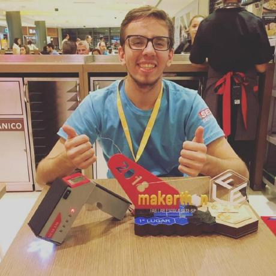

O setor de tecnologia da informação frequentemente apresenta uma curva de aprendizado acentuada, com conceitos abstratos que podem ser desafiadores para novatos. Visando mitigar essas dificuldades, o Learn&Code propõe uma abordagem inovadora através de técnicas interativas de ensino. Nosso plano de resolução baseia-se no conceito de "game learning", que aplica elementos de jogos, como rankings, níveis e visualização de progresso, para manter os usuários motivados e engajados.
O primeiro módulo da nossa plataforma utiliza um sistema de perguntas e respostas semelhante ao do Duolingo, com funcionalidades adicionais, como resolução de problemas computacionais e um chat para mentoria com um “professor”. Para garantir o sucesso do projeto, é essencial que o usuário explore a plataforma e aprenda de maneira prazerosa e intuitiva. O principal indicador de sucesso será a evolução dos usuários nos jogos propostos.
A equipe inicial, composta por Karim e Mateus, será responsável pelo desenvolvimento, lançamento e marketing do Learn&Code, com planos para expandir para equipes de suporte, desenvolvimento, marketing e comercial. Diferente de plataformas como CodeAcademy, Hackerrank e Beecrowd, o Learn&Code se destaca pela sua abordagem gamificada, inspirada no modelo do Duolingo, oferecendo uma experiência de aprendizado envolvente e progressiva.
Estudante do 7o período no curso de Sistemas de Informação na Universidade Federal de Uberlândia, trabalha na empresa Interação Tecnologia e sua área de pesquisa é Redes Neurais Convolucionais para reconhecimento de imagens.

Estudante de Sistemas de Informação no 7º período, trabalho com segurança cibernética, focado em segurança de aplicação e desenvolvimento seguro para proteger sistemas e dados.